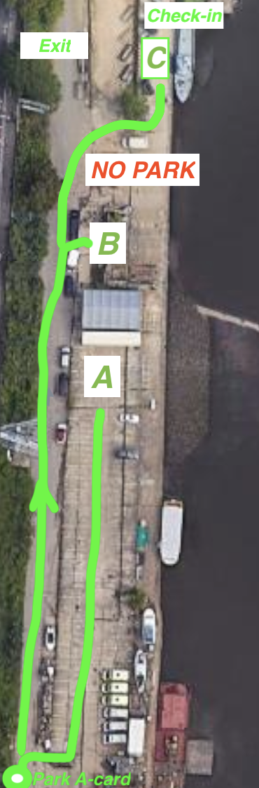

Selamat datang di Praha
Houseboat Dock
Baca dan bagikan sebelum check in.
Google Maps diperlukan!
Penting: bagaimana Anda tiba di Praha, dan perkiraan waktu kedatangan di rumah perahu. Contoh: dengan mobil, 16:30
Tidak ada mobil? Klik di sini
DATANG & PARKIR
Parkir gratis sangat membutuhkan langkah-langkah ini:
- Kirimi kami NOMOR PLATE CAR (misalnya ABA3235) tanpa tanda hubung, melalui Airbnb chat. Lakukan ini secara ideal sekarang. Ini akan meningkatkan kesempatan Anda untuk parkir dekat dengan perahu rumah.
- Tonton VIDEO INI dengan pilihan parkir 🙂
- Ketuk parkir A, B, atau C untuk melihat opsi parkir.
80 meter dari rumah perahu. Gunakan tempat TANPA logo perusahaan. Parkir A.
Parkiran B 60 meter dari rumah perahu. Tempat di sepanjang dinding beton.
Parkiran C (8 tempat terdekat) 50 meter dari rumah perahu. Jaga seluruh mobil di belakang garis putih!
Kemudian berjalan ke rumah perahu berjalan melalui parkir C.
PENTING: Tempat parkir terbatas pada 12 mobil. Mungkin semua tempat sudah penuh dan parkir harus dilakukan di luar pelabuhan. Hal ini relatif jarang terjadi.
Keluar dari pelabuhan ke arah utara. Gerbang keluar terbuka secara otomatis.
PENTING!
Setelah tiba, kirimkan foto mobil yang diparkir dengan nomor plat melalui Airbnb chat. Parkir di tempat yang salah 10 euro per jam, biaya truk derek 250 euro! TOLONG HINDARI MASALAH
CHECK-IN
Periksa nama rumah perahu dan kode kotak kunci Anda dari panduan kedatangan Airbnb. Pergilah ke tempat ini. Cari perahu rumah Anda di peta ini (lokasi perahu rumah). Buka kotak kunci dan masuk. Tutup kotak kunci dan campurkan nomornya. Jatuhkan bagasi Anda dan luangkan waktu sebentar untuk memeriksa rumah perahu
Laporkan segera kerusakan atau masalah.
BERJALAN KE PELABUHAN
Gunakan pintu biru ini (lokasi peta Google). Kode kunci 3570 untuk masuk. Taruh kuncinya kembali, tutup kotak kunci dan campurkan nomornya. Selalu mengunci pintu, setelah masuk atau keluar.
Baca "Teksi, Metro, Tram, Bus"
Nikmatilah!
(Bagian ketiga adalah "penuh", ini petunjuk jalan pintas dan Anda akan menebak bahkan jika Anda tidak melihat ini.

Halaman ini diterjemahkan secara otomatis dari panduan berbahasa Inggris. Jika ada keraguan, versi bahasa Inggris yang berlaku. Versi asli bahasa Inggris